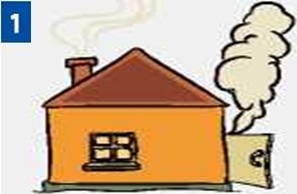
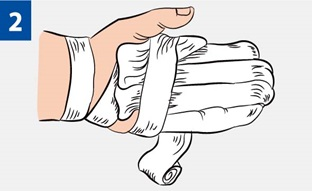
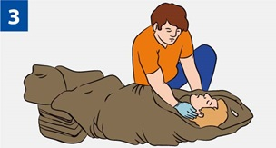
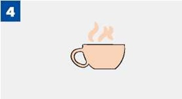

ПЕРВАЯ ПОМОЩЬ ПРИ ОТМОРОЖЕНИЯХ

|
Внеси пострадавшего в теплое помещение. |

|
Укутай отмороженные участки тела в несколько слоев. Нельзя ускорять внешнее согревание отмороженных частей тела. Тепло должно возникнуть внутри с восстановлением кровообращения. Отмороженные участки растирать снегом запрещено!!! |

|
Укутай пострадавшего в одеяла, при необходимости переодень в сухую одежду. |

|
Дай обильное горячее сладкое питье. Накорми горячей пищей. Использование алкоголя запрещено!!! Вызови (самостоятельно или с помощью окружающих) «скорую помощь». |
Источник:
http://www.culture.mchs.gov.ru/medical/algorithms_of_first_aid_to_victims_of_traumatic_injuries_and_urgent_situations/first_aid_for_frostbite/
ТЕЛЕФОН СЛУЖБЫ СПАСЕНИЯ: 112